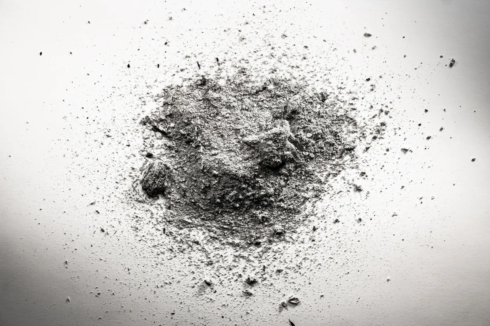

When my sister died a few years ago, my family faced a crisis that stays with me to this day. We grew up in severe poverty so when her life ended, her children were left entirely responsible for addressing her body, yet they lacked the means or resources to handle it. At the time my oldest sister and I were able to help out with most of the finances. To us it was not a choice; leaving her body unaddressed would have been totally disrespectful to her memory and her life.
Thinking about my own loved ones, I do not want to let them inherit that type of stress. I want my wife and children to have the space to process their raw loss, to feel the personal impact of my absence, and to grieve naturally without scrambling over bills and corporate death contracts. For me, handling these arrangements now because I can, is an active expression of compassion, protecting their peace when they are most vulnerable. Whatever plans the family chooses to honor me is up to them—their grief belongs to them. I believe my job is simply to hand them clear options for my remains that are completely free of debt and systemic friction.
Death is one of the many subjects our culture excels at hiding. The mind finds it deeply unpleasant, so it builds defensive walls to push the reality away. In formal practice, we often notice a visceral, instinctual contraction when a difficult topic arises—a state of resistance where the mind goes through stages of denial to escape the truth. We see this today where facts are changed or created to attempt to deflect the way it is.
Mindfulness means noticing this resistance clearly. We do not judge it, but we do not let it paralyze us either. We consciously step forward and address the details. This is what it means to "be the light." It is the definition of emotional maturity and spiritual discipline: standing in the room with our mortality and clearing out the administrative noise before the system slows down.
To understand how a householder navigates mortality without falling into fear, we can turn to an ancient parable: two identical birds sitting on the same branch. The first bird sits on the lower limb, busily eating the sweet and bitter fruits of the world, wholly entangled in the stories, anxieties, and domestic struggles of daily life. The second bird sits on a higher branch, perfectly still, non-attached, simply watching the lower bird eat.
In our daily life, we must inhabit both birds simultaneously. The lower bird must do the dishes, organize the bank statements, and sign the green burial paperwork. The higher bird provides the spaciousness of pure awareness, witnessing the mind’s resistance without being consumed by the drama.
This exact division matches the seemingly strange mechanics of modern quantum physics. In 1997, the physicist Max Tegmark outlined a thought experiment involving a quantum gun hooked up to a device that measures particle spin. If the spin is down, the gun clicks harmlessly; if the spin is up, it fires a fatal round instantly. To an external observer standing in the room, the odds of survival drop to zero after a few pulls of the trigger. They watch the first bird—the biological machine—perish. But according to the mathematics of the wave function, reality splits at every single junction. Because an observer can only ever find themselves in a branch where they are alive and capable of observing, the first-person experience yields an impossible, unbroken string of survival. You only ever experience click, after click, after click. The underlying mathematics has no term for the deletion of the observer. From the inside of consciousness, you have never once recorded your own discontinuity. You have never been present for your own absence.
When we look through the lens of early Theravada Buddhist teachings, non-dual Advaita Vedanta and science, we find that what we call "death" appears to be merely a change in the physical configuration of a temporary antenna. In 1982, the theoretical physicist Hugh Everett demanded that his cremated remains simply be thrown out with the household garbage. It was not an act of nihilism or despair; it was a clinical understanding of physics. He understood his body was just a temporary receiver. When a television set breaks, you do not hold a funeral for the plastic and circuits; yet the broadcast signal continues everywhere else.
Erwin Schrödinger posited a similar understanding: that consciousness is a singular, unified field. The brain does not generate the observer out of dead carbon and water; it acts as a localized receiver, a fragmented prism. Shine a single beam of white light through a prism, and it splits into distinct, seemingly isolated colors on the opposite wall. Each beam appears independent. Smash the prism, and the individual colors vanish, but the original white light remains completely untouched.
Our fear of death is actually the ego’s fear of losing its records. Identity is a highly compressed file of social conditioning with preferences, childhood traumas, and behavioral habits stored in the cortical tissue. When the tissue fails, the file deletes. The event of death is simply the deletion of the autobiography.
But the underlying light—the raw witness that has been reading the file—is entirely immune to the failure of the biological hardware. The universal substrate continues observing through the remaining billions of biiological lenses. When you handle your body disposal arrangements now, you are acting as a responsible, compassionate steward for your children. You are letting the lower bird clean up the nest, so that your mind can rest completely inside the unconditioned now, untouched by the fiction of the timeline.